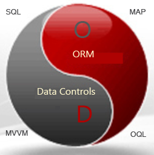

([中英对照版]English)
一、框架介绍
1，SOD框架是什么？
以前有一个著名的国产化妆品“大宝SOD密”，SOD框架虽然跟它没有什么关系，但是名字的确受到它的启发，因为SOD框架就是给程序员准备的“蜜糍”（一种含有蜂蜜的糍粑），简单灵活且非常容易“上手”。

SOD框架是一个全功能数据开发框架，框架的三大核心功能(SQL-MAP、ORM、Data Controls)代表三种数据开发模式（SQL开发模式/ORM开发模式/窗体控件开发模式），这三大功能名称的英文首字母缩写也是SOD框架名称的由来。SOD框架包含很多有用的功能组件，还包括多种企业级解决方案，以及相关的集成开发工具、图书和社区支持。
当你用它来开发复杂的企业级项目的时候，你会感觉“爱不释手”，因为不论你的团队是什么样子的，SOD框架总能给您提供以最简洁的方式实现最强大的功能，保证菜鸟级的程序员可以轻松看懂使用SOD框架编写的每一行代码，也能让资深程序员有一种“越野驾驶”的体验--对数据访问细节全方位的掌控能力！
SOD框架脱胎于PDF.NET框架，框架追求的目标就是简单与效率的平衡，体现在代码的精简、开发维护的简单与追求极致的运行效率。SOD框架目前运行在.NET平台，但它没有依赖于.NET框架很多独有的特性，这使得SOD框架在理论上有可能实现跨语言平台支持。
2，为什么需要SOD框架?
EF框架或大部分ORM框架的缺点就是SOD框架的优点， 因为SOD框架并不只是一个ORM框架。 ORM框架并不能解决所有的数据开发问题，如果试图这么做将大大增加ORM框架的复杂性和使用难度（比如用EF框架来做数据批量更新），所以这也是为什么很多开发人员更加喜欢Dapper这类“微型ORM”（或半ORM）的原因。
在企业级数据开发的时候，有时候使用其它一些手段能够起到更好的效果，这就要求框架要支持多种开发模式，支持更精准的操纵SQL查询，更灵活的对象关系映射（ORM），更直接的面向底层数据访问，或者更高层面的数据抽象，需要全方位的数据开发解决方案。SOD框架拥有超过15年的项目应用历史，相信它为你而生！
SOD框架包含SQL-MAP，ORM，DataControls三大子框架，但它却是一个非常轻量级的框架，也是一个企业级数据应用开发的解决方案。 了解更多，请看这里。
SOD框架特别适合于以下类型的企业项目：
- 对数据操作安全有严格要求的金融行业；
- 对数据访问速度、内存和CPU资源有苛刻要求的互联网行业；
- 对需求常常变化，项目经常迭代，要求快速开发上线的项目；
- 对稳定性要求高，需要长期维护的企业级应用如MIS、ERP、MES等行业；
- 需要低成本开发，人员技能偏低的中小型项目。
因为足够简单，所以SOD框架是少数仍然支持 .NET 2.0的框架，当然，它也支持 .NET 3.x,.NET 4.x，.Net core 以及.NET 5/6等以上框架版本 。
3，功能特性
SOD框架包括以下功能：
3.1 核心三大功能 -（S，O，D）：
- SQL-MAP ：
- XML SQL config and Map DAL --基于XML配置的SQL查询和数据访问层映射
- SQL Map Entity --SQL语句映射为实体类
- ORM ：
- OQL(ORM Query Language) --ORM查询语言：OQL
- Data Container --数据容器
- Entity Indexer --实体类索引器访问
- Table Map route Query --分表查询支持
- Micro ORM --微型ORM
- Data Controls ：
- Consistent Data Froms --一致的数据窗体访问技术
- WebForm Data Controls --Web窗体数据控件
- WinForm Data Controls --Windows窗体数据控件
3.2 有用的功能组件：
Hot Use Cache --热缓存（缓存最常用的数据）
Binary Serialization --二进制序列化
Query Log --查询日志
Command Pipeline --命令管道
Distributed Identification --分布式ID3.3 企业级解决方案：
MVVM (Web/WinForm) --MVVM数据窗体
Memory Database --内存数据库
Transaction Log Data Replication --事务日志数据复制
Data Synchronization --数据同步
Distributed transaction --分布式事务
OData Client --OData 客户端3.4 工具：
Integrated Development Tool --集成开发工具，包括实体类生成、SQL-MAP代码自动生成和多种数据库访问工具。
Nuget support --Nuget 支持4，源码和社区:
- Code: https://github.com/znlgis/sod or https://gitee.com/znlgis/sod
- Home: http://www.pwmis.com/sqlmap
- Blog: https://www.cnblogs.com/bluedoctor
- QQ Group:18215717,154224970
要了解更多，请看这篇文章:.NET ORM 的 “SOD蜜”--零基础入门篇

或者参考框架作者编著的图书：《SOD框架企业级应用数据架构实战》，该书对SOD框架的企业级解决方案进行了详细的介绍。。
二、快速入门
1,准备工作
在开始工作之前，先建立一个控制台项目，然后在程序包管理控制台，添加SOD框架的Nuget 包引用：
Install-Package PDF.NET.SOD 这样即可获取到最新的SOD框架包并且添加引用，然后，就可以开始下面的工作了。 已经建立好的当前Demo程序请看框架源码解决方案项目中的“SODTest”项目。
1.1，配置数据连接：
SOD框架默认使用应用程序配置文件中配置的最后一个数据连接配置，当然也可以不配置连接直接在程序中初始化数据连接对象。为了方便，我们在源码项目的app.config文件中，做如下数据访问连接配置：
<connectionStrings>
<add name="local"
connectionString="Data Source=.;Initial Catalog=MyDB;Integrated Security=True"
providerName="SqlServer"/>
<add name="local2"
connectionString="Data Source=(LocalDB)\MSSQLLocalDB;AttachDbFilename=~/Database2.mdf;Integrated Security=True"
providerName="SqlServer" />
</connectionStrings>providerName 是SOD框架的数据访问提供程序，PWMIS.Core.dll内置的可选简略名称有：
Access | SqlServer | Oracle | SqlCe | OleDb | Odbc
如果是其它的扩展程序集，那么providerName应该写成下面的形式：
providerName="<提供程序类全名称>,<提供程序类所在程序集>"
比如使用SOD封装过的Oracle官方的ADO.NET提供程序类：
providerName="PWMIS.DataProvider.Data.OracleDataAccess.Oracle,PWMIS.OracleClient"
在其它提供程序中，SOD框架提供了对【MySQL、Oracle、PostgreSQL、SQLite、达梦、人大金仓】等常见数据库的支持（扩展程序集），只要数据库提供了ADO.Net驱动程序，那么SOD框架经过简单包装即可保证支持。
在当前示例中使用的是名字为“local2”的数据连接，你可以修改成你实际的连接字符串，示例中使用的是SQLServer本地数据库文件，源码中已经包含了此文件，如果不能使用请重新创建一个。
1.2，实体类定义
SOD框架使用ORM功能并不需要先定义实体类，直接使用与数据表对应的接口类型即可开始查询。 下面定义一个用于数据访问的“用户表”接口和对应的实体类。
public interface ITbUser
{
int ID { get; set; }
string Name { get; set; }
string LoginName { get; set; }
string Password { get; set; }
bool Sex { get; set; }
DateTime BirthDate { get; set; }
}
public class UserEntity : EntityBase, ITbUser
{
public UserEntity()
{
TableName = "TbUser";
IdentityName = "ID";
PrimaryKeys.Add("ID");
}
public int ID
{
get { return getProperty<int>("ID"); }
set { setProperty("ID", value); }
}
public string Name
{
get { return getProperty<string>("Name"); }
set { setProperty("Name", value,100); } //长度 100
}
public string LoginName
{
get { return getProperty<string>("LoginName"); }
set { setProperty("LoginName", value,50); }
}
public string Password
{
get { return getProperty<string>("Password"); }
set { setProperty("Password", value,50); }
}
public bool Sex
{
get { return getProperty<bool>("Sex"); }
set { setProperty("Sex", value); }
}
public DateTime BirthDate
{
get { return getProperty<DateTime>("BirthDate"); }
set { setProperty("BirthDate", value); }
}
}用同样的方式定义“订单”接口ISimpleOrder、ISimpleOrderItem 和相应的实体类SimpleOrderEntity、SimpleOrderItemEntity。有关这几个接口和类型的详细定义请参见项目源码。
元数据映射：
实体类的元数据包括映射的表名称、主外键、标识字段、属性映射的字段名称和字段类型、长度等。
在上面定义的实体类UserEntity中，它继承了SOD框架的实体类基类EntityBase，然后就可以在实体类的属性定义中使用 getProperty方法和setProperty方法，这两个方法都提供了“属性字段名”参数，它表示当前属性名和数据表字段名的映射关系。
在实体类构造函数中，TableName表示实体类映射的数据表名称，IdentityName表示映射的数据表标识字段名称，一般用于自增字段，PrimaryKeys表示实体类映射的主键字段，可以有多个字段来表示主键，例如联合主键。
动态映射：
SOD框架的实体类采用“动态元数据映射”，这些元数据都是可以在程序运行时进行修改，因此它与Entity Framework等其它ORM框架的实体类映射方式有很大不同。这个特点使得实体类的定义和元数据映射可以在一个类代码中完成，并且不依赖于.NET特性声明。这种动态性使得SOD框架可以脱离繁琐的数据库表元数据映射过程，简化数据访问配置，并且能够轻松的支持“分表、分库”访问。
逻辑映射（虚拟映射）:
元数据的映射可以是“逻辑映射”，即映射一个数据表不存在的内容，例如指定要映射外键字段，但数据库可以没有物理的外键字段，或者指定一个虚拟的主键。也可以不做任何元数据映射，这样实体类可以作为一个类似的“字典”对象来使用，或者用于UI层数据对象。
动态实体类：
约定胜于配置。如果元数据全部采用默认映射，可以大大简化实体类的定义过程，直接采用接口类型来动态创建实体类和进行查询访问。
在默认映射的时候，通常将类型名称映射为表名称，属性名称映射为字段名称。如果是接口类型，映射表名称的时候会去掉接口名中第一个“I”字符。
例如接口类型 "IDbUser" 映射的表名称为 "DbUser"
下面是根据接口动态创建实体类的示例：
IDbUser user = EntityBuilder.CreateEntity<IDbUser>(); 1.3，定义数据上下文
注意这是一个可选步骤，如果你不使用Code First开发模式的话。
在很多ORM框架中，数据上下文对象DbContext使用都很常见，但对于SOD框架并不是必须的，SOD框架崇尚简单直接的使用方式，有多种方式可以直接开始数据查询。如果你需要使用Code First开发模式，由程序自动创建数据表而不是先设计数据库表，可以使用SOD框架的数据上下文功能。
下面定义一个用于数据访问的简单数据上下文对象SimpleDbContext。
public class SimpleDbContext : DbContext
{
public SimpleDbContext():base("local2")
{
}
protected override bool CheckAllTableExists()
{
CheckTableExists<UserEntity>();
CheckTableExists<SimpleOrderEntity>();
//创建表以后立即创建索引
InitializeTable<SimpleOrderItemEntity>("CREATE INDEX [Idx_OrderID] On [{0}] ([OrderID])");
return true;
}
}
在上面的代码中，SimpleDbContext使用名为“local2”的数据连接配置，它会在首次执行的时候调用CheckAllTableExists方法，检查表是否存在，如果不存在则创建实体类对应的数据表。 可以使用InitializeTable方法在表第一次创建完成以后执行表的初始化工作，比如创建索引。
2,数据访问辅助对象
AdoHelper对象是SOD框架的数据访问辅助对象，它是一个抽象数据访问对象，需要根据具体的数据库类型提供相应的数据访问提供程序。任何数据库的.NET驱动程序经过简单包装即可成为SOD框架的数据访问提供程序。 SOD框架内置的数据访问提供程序类型请参考本文【1.1 配置数据连接】的内容。
AdoHelper对象提供了各种数据访问方法，包括获取DataSet、DataReader以及执行数据的增删改、调用存储过程和多级事务查询等。 实例化一个AdoHelper对象可以通过MyDB类的多种方式来实现，也可以根据连接配置来动态创建，或者直接实例化一个SOD数据访问提供程序。下面的例子提供了三种方式来实例化AdoHelper对象：
//根据连接配置中的“连接名字”来创建，例如"local2"
AdoHelper db1 = MyDB.GetDBHelperByConnectionName("local2")；
//根据连接配置中最后一个配置来创建
AdoHelper db2 = MyDB.GetDBHelper();
//直接实例化数据访问提供程序，例如SqlServer数据库
AdoHelper db3= SqlServer();下面是使用AdoHelper的简单示例。
2.1，执行不返回值的查询
通过调用ExecuteNonQuery方法来实现，该方法返回本次执行受影响的行数的结果值。 下面是一个创建用户表的例子，创建的用户表在下面的示例中会使用到：
AdoHelper db2 = AdoHelper.CreateHelper("local2");
//异常处理示例
string sql_createUser = @"
Create table [TbUser](
[ID] int identity primary key,
[Name] nvarchar(100),
[LoginName] nvarchar(50),
[Password] varchar(50),
[Sex] bit,
[BirthDate] datetime
)";
try
{
db2.ExecuteNonQuery(sql_createUser);
Console.WriteLine("表[TbUser] 创建成功！");
}
catch (PWMIS.DataProvider.Data.QueryException qe)
{
Console.WriteLine("SOD查询错误，错误原因：{0}", qe.InnerException.Message);
}
catch (Exception ex)
{
Console.WriteLine("错误：{0}", ex.Message);
}使用AdoHelper对象进行查询的时候，如果执行查询发生异常，使用异常处理代码可以捕获QueryException查询异常对象， 在该异常对象中可以查看详细的错误原因，以及执行查询相关的一些信息，如果SQL语句、执行参数等。
2.2，参数化查询
SOD框架认为保证数据访问的安全是框架最重要的目标，参数化查询是避免“SQL注入”最有效的手段。SOD框架对所有数据库都支持参数化查询，包括Access数据库等。 除了最基础的AdoHelper对象可以支持参数化查询，SQL-MAP功能也是支持参数化查询的。下面是使用参数化查询插入用户数据的例子：
string sql_insert = "INSERT INTO [TbUser] ([Name],[LoginName],[Password],[Sex],[BirthDate]) VALUES(@Name,@LoginName,@Password,@Sex,@BirthDate)";
IDataParameter[] paras = new IDataParameter[] {
db2.GetParameter("Name","张三"),
db2.GetParameter("LoginName","zhangsan"),
db2.GetParameter("Password","888888"),
db2.GetParameter("Sex",true),
db2.GetParameter("BirthDate",new DateTime(1990,2,1))
};
int rc = db2.ExecuteNonQuery(sql_insert, CommandType.Text, paras);
if (rc > 0)
Console.WriteLine("插入数据成功！用户名：{0}", paras[0].Value);
AdoHelper对象的GetParameter方法有多个重载方法，可以满足参数化查询的各种需求，它返回的是当前数据库类型的查询参数对象，可以实现更多的参数化查询的细节控制，例如调用存储过程所需的查询参数。
2.3，微型ORM
微型ORM的特点是允许直接执行SQL语句查询，但是查询结果可以直接映射成为POCO类型或者实体类型， 相比较以前执行查询返回一个数据集(DataSet)而言，微型ORM即享受了直接编写SQL执行查询的灵活性，又得到了强类型对象使用的便利性，因此微型ORM很受开发人员欢迎。
SOD框架支持微型ORM功能，它允许你直接控制查询返回的DataReader对象，也可以将查询直接映射到一个强类型对象。下面的示例演示了通过微型ORM功能查询得到用户列表对象。
string sql_query = "SELECT [ID],[Name],[Sex],[BirthDate] FROM [TbUser] WHERE [LoginName]={0}";
var mapUsers = db2.ExecuteMapper(sql_query, "zhangsan")
.MapToList(reader => new
{
ID = reader.GetInt32(0),
Name = reader.GetString(1),
Sex = reader.GetBoolean(2),
BirthDate = reader.GetDateTime(3)
});
var userList = db2.QueryList<UserInfo>(sql_query, "zhangsan");上面的示例演示了两者结果映射方式，使用AdoHelper对象的MapToList方法可以直接操作返回的DataReader对象，根据SQL语句中的字段顺序定制读取查询结果字段值，这种方式由于是面向底层Ado.NET的操作，因此查询具有很高的性能。 另外一种方式就是使用AdoHelper对象的QueryList方法，它直接将SQL查询结果映射为一个POCO对象。
上面的示例还演示了SOD的微型ORM查询使用的“参数化查询”方式，相比较于直接的参数化查询，这里只需要使用参数的占位符来表示参数，就像Console.WriteLine()方法使用的参数一样。例如上面的示例中查询的参数是字段LoginName对于的查询参数，参数值是“zhangsan”。
3，SQL-MAP简介
3.1，参数化查询的难题
参数化查询的SQL语句可以被数据库编译执行从而提高查询效率；参数化查询是在数据库完成 SQL 指令的编译后，才套用参数运行，因此就算参数中含有危害数据库的指令，也不会被数据库所运行，因此参数化查询提高了SQL执行的安全性。 虽然参数化查询有很多优点，但缺点是在开发上会增加代码编写量，另外由于参数化查询的SQL语句缺乏统一的标准，也会使得采用参数化查询的代码难以在不同数据库平台之间移植。请看下面的示例：
--Microsoft SQL Server
INSERT INTO myTable (c1, c2, c3, c4) VALUES (@c1, @c2, @c3, @c4)
--Microsoft Access
UPDATE myTable SET c1 = ?, c2 = ?, c3 = ? WHERE c4 = ?
--MySQL
UPDATE myTable SET c1 = ?c1, c2 = ?c2, c3 = ?c3 WHERE c4 = ?c4
--Oracle
UPDATE myTable SET c1 = :c1, c2 = :c2, c3 = :c3 WHERE c4 = :c4
--PostgreSQL
UPDATE myTable SET c1 = 2, c3 = 4
从上面不同数据库的SQL参数化查询的示例可以看到，不同数据库支持的参数查询的参数名写法是不同的，要求在参数名前面加不同的前缀符号（@/:/?/$）。 在ADO.NET中，采用各数据库的OleDB或者ODBC驱动程序，都要求使用 ？符号表示参数。
3.2，抽象SQL参数化查询
对于参数化查询SQL语句写法不统一的问题，只需要再抽象出一种参数化查询的方式即可解决这个问题。在SOD框架中，对参数的定义统一采用##来处理，具体格式如下：
#参数名字[:参数类型],[数据类型],[参数长度],[参数输出输入类型]#
上面定义当中，中括号里面的内容都是可选的。参数定义的详细内容，请参看PDF.NET（PWMIS数据开发框架）之SQL-MAP目标和规范
采用抽象SQL参数查询，根据参数定义规范，上面对于myTable的更新语句可以写成下面的样子：
UPDATE myTable SET
c1 = #c1#, c2 = #c2:String#, c3 = #c3:String,Sring,50# WHERE c4 = #c4:Int32#
如果不指定参数的类型，默认为String类型，例如c1参数。
程序在运行时，会根据当前具体的数据库访问程序实例，将##内部的参数替换成合适的参数内容。
3.3,抽象SQL查询：SQL-MAP技术
我们将SQL中的参数“抽象化”了，我们还可以进一步抽象整个SQL，看下面的抽象过程： 1, 编写任意形式的合法SQL查询语句； 2, 抽象SQL中的参数； 3, 将整个SQL语句抽象成一个唯一名字为CommandName； 4, 将一组CommandName映射到一个DAL类文件； 5, 将这个CommandName映射到一个DAL类的方法名称； 6, 将SQL语句中的参数名称映射到该DAL类的当前方法中的参数名称； 7, 将整个SQL脚本文件映射到一个DAL程序集。
这个思想，就是SQL-MAP，将SQL语句映射为程序!
下面，我们用一个学生成绩管理的例子作为SQL-MAP的SQL语句写法的示例：
<CommandClass Name ="ScoreManagement" Description ="成绩管理" Class ="" >
<Select CommandName="GetStudent" CommandType="Text" Description="查询所属系的学生信息" Method="" ResultClass="DataSet">
<![CDATA[
select * from Student where deptID=#DID:Int32#
]]>
</Select>
<Insert CommandName="InsertStudent" CommandType="Text" Description="增加学生" Method="AddStudent" >
insert into [Student](stuName,deptID) values(#Name:String#,#DeptId:Int32#)
</Insert>
</CommandClass>将上面的XML保存为一个名字叫做SqlMap.config的配置文件，该配置文件的详细内容请参考SOD框架源码解决方案里面SqlMapDemo项目中的代码。
在上面的SQL-MAP配置文件中，CommandClass节点对应于程序的DAL层查询类，一个查询类下面有多种查询类型，包括Select/Update/Inset/Delete这四种SQL查询类型，分别对应于 CommandClass节点下面的Select/Update/Insert/Delete类型，如上所述，Select节点有一个命令名为GetStudent，Insert节点有一个命令名为InsertStudent， 这些命令名字分别对应于ScoreManagement类下面的方法。
3.4,SQL查询和代码映射
下面看一下这个SQL-MAP配置映射的DAL（数据访问层）类的具体代码：
using System;
using System.Data;
using System.Collections.Generic;
using PWMIS.DataMap.SqlMap;
using PWMIS.DataMap.Entity;
using PWMIS.Common;
namespace SqlMapDemo.SqlMapDAL
{
public partial class ScoreManagement
: DBMapper
{
public ScoreManagement()
{
Mapper.CommandClassName = "ScoreManagement";
Mapper.EmbedAssemblySource="SqlMapDemo,SqlMapDemo.SqlMap.config";
}
/// <summary>
/// 查询所属系的学生信息
/// </summary>
/// <param name="DID"></param>
/// <returns></returns>
public DataSet GetStudent(Int32 DID )
{
//获取命令信息
CommandInfo cmdInfo=Mapper.GetCommandInfo("GetStudent");
//参数赋值，推荐使用该种方式；
cmdInfo.DataParameters[0].Value = DID;
//参数赋值，使用命名方式；
//cmdInfo.SetParameterValue("@DID", DID);
//执行查询
return CurrentDataBase.ExecuteDataSet(CurrentDataBase.ConnectionString, cmdInfo.CommandType, cmdInfo.CommandText , cmdInfo.DataParameters);
//
}//End Function
/// <summary>
/// 增加学生
/// </summary>
/// <param name="Name"></param>
/// <param name="DeptId"></param>
/// <returns></returns>
public Int32 AddStudent(String Name , Int32 DeptId )
{
//获取命令信息
CommandInfo cmdInfo=Mapper.GetCommandInfo("InsertStudent");
//参数赋值，推荐使用该种方式；
cmdInfo.DataParameters[0].Value = Name;
cmdInfo.DataParameters[1].Value = DeptId;
//参数赋值，使用命名方式；
//cmdInfo.SetParameterValue("@Name", Name);
//cmdInfo.SetParameterValue("@DeptId", DeptId);
//执行查询
return CurrentDataBase.ExecuteNonQuery(CurrentDataBase.ConnectionString, cmdInfo.CommandType, cmdInfo.CommandText , cmdInfo.DataParameters);
//
}//End Function
}//End Class
}//End NameSpace 上面的SqlMapDal代码完整的映射了SQL-MAP配置文件的内容，实现了SQL语句抽象到程序抽象的过程，因此理论上只要会写SQL语句即可写DAL查询程序，
这个SqlMapDal代码文件可以通过SOD框架的集成开发工具自动生成，每次修改了SQL-MAP配置文件，可以通过工具“一键生成DAL代码”，极大的增加了DAL层开发的灵活性和开发效率。
4，ORM查询简介
SOD框架的ORM功能支持普通的基于实体类的CRUD功能，还有框架独特的ORM查询语言--OQL，其中OQL又分为面向单表操作的泛型OQL（GOQL）和支持多表复杂查询的OQL。
4.1，ORM查询语言--OQL
使用ORM必然会提到实体类的话题，实体类实现了程序对象和数据表结构的映射。在很多ORM框架的实现中，实体类又分为“充血实体类”和“贫血实体类”两种，后者一般就是简单的POCO类型，而前者需要复杂的定义以支持实体类保持数据的状态，以便生成正确的SQL语句；对于前者必须使用另外的方式在代码编译期间生成SQL语句。
ORM本来是完成“对象-关系映射”的，但这里大多数的ORM都包含了“生成SQL”的功能，而要实现SQL那样的灵活性，那么我们必须分离出ORM这个关注点，将“生成SQL”的功能从ORM中抽取出来，这样我们就能够有更多的精力致力于发明一个面向对象的，用于ORM查询的语言，(ORM Query Language) ,这就是OQL。
ORM查询语言，其实早就有了，从早期的Hibernate的HQL，到MS的Linq（Linq2SQL，EF其实内部都是使用Linq生成的SQL），它们都可以生成复杂的SQL语句，它们都是直接作用于ORM框架的。几乎在与Linq同一时期，SOD框架也发明了自己的ORM查询语言，称为OQL。下面提到的OQL，都是指的SOD框架的OQL。下面是使用OQL的一个经典示例：
UserEntity u = new UserEntity();
u.FirstName = "zhang";
//OQL表达式示例：
var q = OQL.From(u)
.Select(u.ID,u.FirstName,u.LastName)
.Where(u.FirstName)
.OrderBy(u.ID)
.END;
var userList = EntityQuery<UserEntity>.QueryList(q);上面的查询构建了一个OQL表达式，用来查询用户表中所有姓”zhang“的用户，并且仅查询用户表的三个字段的内容。可以看到编写这个OQL表达式跟编写SQL查询语句非常相似，几乎没有使用门槛，体现了SOD框架简单易用的特点。
有关OQL的由来以及OQL的详细语法和使用示例，请参考以下几篇文章：
4.2，GOQL示例
GOQL适合单表查询，可以仅定义一个对应数据表的接口类型来进行GOQL查询，下面的例子使用ITbUser接口来查询用户数据：
//GOQL简单示例
//GOQL使用接口类型进行查询
var goql = OQL.FromObject<ITbUser>()
.Select()
.Where((cmp, obj) => cmp.Comparer(obj.LoginName, "=", "zhangsan"))
.END;
var list1 = goql.ToList(db2);
//GOQL使用实体类类型进行查询
var list11 = OQL.FromObject<UserEntity2>()
.Select()
.Where((cmp, obj) => cmp.Comparer(obj.LoginName, "=", "zhangsan"))
.END
.ToList(db2);
//GOQL复杂示例
var list2 = OQL.FromObject<ITbUser>()
.Select(s => new object[] { s.ID, s.Name, s.Sex, s.BirthDate }) //选取指定字段属性查询
.Where((cmp, obj) => cmp.Property(obj.LoginName) == "zhangsan") //使用操作符重载的条件比较
.OrderBy((order, obj) => order.Desc(obj.ID))
.ToList(db2);OQL表达式总是以From方法开始，以END属性结束，通过OQL的链式语法，Select、Where、OrderBy方法总是以固定的顺序出现，因此无任何SQL编写经验的人也可以通过OQL写出正确的查询。 GOQL对象通过调用OQL的FormObject泛型方法得到，之后的语法跟OQL一样，最后通过GOQL的ToList方法执行查询得到结果。 ToList方法有重载，可以用一个AdoHelper对象做参数来对指定的数据库进行查询,如果不指定，则默认取最后一个连接配置对应的AdoHelper对象，例如：
var list=OQL.FromObject().Select().END.ToList();
GOQL的复杂查询支持通过Select方法指定要查询的实体类属性字段，也可以在Where、OrderBy方法上使用Lambda表达式购置查询和排序条件。 Where方法上使用了OQLCompare对象来生成查询条件对象，它有多种条件比较方法和方法重载，也支持操作符重载。
4.3，OQL示例
GOQL实际上式OQL的简化形式，所以OQL可以实现更强大的查询方式，除了支持单表/单实体类查询，也支持多表/多实体类查询。
OQL对象的Form方法需要一个或者多个实体类对象实例作为参数，因此在构造OQL表达式的时候可以访问当前实体类对象的属性从而简化条件表达式的构造。 下面是用户登录查询的示例，在数据库中查询是否有匹配的登录名和密码的记录：
//OQL查询示例
UserEntity ue = new UserEntity();
ue.LoginName = "zhangsan";
ue.Password = "888888";
//OQL简单查询示例
var oql = OQL.From(ue)
.Select()
.Where(ue.LoginName, ue.Password)
.END;
var userObj = EntityQuery<UserEntity>.QueryObject(oql, db2);上面的查询中直接使用了UserEntity对象的LoginName、Password属性的值作为查询条件值，如果使用GOQL，上面的查询等价于下面的查询方式：
var userObj2 = OQL.FromObject<UserEntity>()
.Select()
.Where((cmp, obj) => cmp.Comparer(obj.LoginName, "=", "zhangsan") &
cmp.Comparer(obj.Password, "=", "888888"))
.END
.ToObject(db2);
var userObj3 = OQL.FromObject<UserEntity>()
.Select()
.Where((cmp, obj) => cmp.Property(obj.LoginName)== "zhangsan" &
cmp.Property(obj.Password) == "888888")
.END
.ToObject(db2);在上面的查询中，Where方法里面使用了两个比较条件，OQL使用&符号表示SQL的AND条件，使用|符号表示SQL的OR条件。 这个功能使用了C#语言的操作符重载功能来实现的，OQL还支持>,<,==,!=,>=,<= 这些操作符重载，操作符重载功能的支持使得OQL表达式编写更简单直观。
除了上面介绍的OQL简单查询，OQL也支持复杂查询，请看下面的示例：
//OQL复杂查询示例
var oql2 = OQL.From(ue)
.Select(new object[] { ue.ID, ue.Name, ue.Sex, ue.BirthDate })
.Where(cmp => cmp.Property(ue.LoginName) == "zhangsan" & cmp.EqualValue(ue.Password))
.OrderBy(order => order.Desc(ue.ID))
.END;
oql2.Limit(5, 1);
var list4 = EntityQuery<UserEntity>.QueryList(oql2, db2);实际上这个查询并不算复杂，OQL还支持主子表查询、多表查询，由于篇幅原因不在这里做更多介绍。
OQL除了从数据库查询数据到实体类对象，还支持批量更新操作，例如更新所有用户的密码为“8888”：
UserEntity ue= new UserEntity();
ue.Password = "8888";
var oql_update = OQL.From(ue).Update(ue.Password).END;
var ru = EntityQuery<UserEntity>.ExecuteOql(oql_update, db2);4.4，增删改数据
由于SOD框架采用的是充血实体类，实体类可以记录前后操作的数据状态，使得编写增删改功能的代码很简单， 如下面的对用户数据的增删改过程：
UserEntity ue2 = new UserEntity();
ue2.LoginName = "lisi";
ue2.Password = "8888";
ue2.Name = "李四";
int ic= EntityQuery<UserEntity>.Instance.Insert(ue2, db2);
if(ic>0)
Console.WriteLine("添加数据成功，用户ID={0}", ue2.ID);
ue2.BirthDate = new DateTime(1990, 1, 2);
ue2.Sex = false ;
int uc=EntityQuery<UserEntity>.Instance.Update(ue2, db2);
if(uc>0)
Console.WriteLine("修改数据成功，用户ID={0}", ue2.ID);
ue2.PrimaryKeys.Clear();
ue2.PrimaryKeys.Add("LoginName");
int dc= EntityQuery<UserEntity>.Instance.Delete(ue2, db2);
if (dc > 0)
Console.WriteLine("删除用户[{0}]成功！",ue2.LoginName);在用户表中ID字段是标识字段，因此插入数据的时候框架会忽略标识字段的值，但是插入数据成功后实体类中标识字段对应的属性会自动获取刚才的自增字段值。 如上面的例子，当ue2对象插入成功后，ue2.ID就获得了刚刚插入的自增字段值。同时，ue2对象的ID属性也是实体类的主键字段属性， 这样当实体类对象修改后，可以调用EntityQuery实例对象的Update方法更新数据。
SOD框架实体类的元数据是动态元数据，实体类的主键字段是虚拟的，并不需要跟数据表的主键一一对应，所以程序可以在运行时修改实体类的主键字段。 如上述示例程序，ue2对象清除了自己的主键字段，添加了用户登录名字段，之后成功删除了前面添加的数据。
除了采用实体类的方式类增删改数据，SOD框架还支持批量增删改数据，使用OQL语句即可实现这个功能，可以参考前面OQL的示例。
5，示例：保存和查询订单数据
前面介绍了SOD框架ORM操作的一些基础知识，实际上，框架提供了至少8种查询方式，详细内容，请看.NET ORM 的 “SOD蜜”--零基础入门篇
为了更好的展示SOD框架在项目上的实际应用，下面使用常见的订单操作来说明实体类定义和ORM查询更多的细节。
5.1，订单业务类设计
订单类一般需要包含用户信息、订单名、订单价格、商品清单、收货地址等信息，为了简化示例，我们设计一个简单订单类SimpleOrder，它仅仅包含订单的基础信息和商品清单， 所以订单业务类的设计包含一个订单类和商品清单类，为统一订单实体类的设计，这里先设计订单接口类型。
public interface ISimpleOrder
{
long OrderID { get; set; }
string OrderName { get; set; }
int UserID { get; set; }
DateTime OrderDate { get; set; }
double OrderPrice { get; set; }
ISimpleOrderItem[] OrderItems { get; }
}
public interface ISimpleOrderItem
{
string GoodsID { get; set; }
string GoodsName { get; set; }
int Number { get; set; }
double UnitPrice { get; set; }
}然后设计订单业务类：
public class SimpleOrder : ISimpleOrder
{
public long OrderID { get; set; }
public string OrderName { get; set; }
public int UserID { get; set; }
public DateTime OrderDate { get; set; }
public double OrderPrice { get; set; }
public ISimpleOrderItem[] OrderItems { get; set; }
}
public class SimpleOrderItem: ISimpleOrderItem
{
public string GoodsID { get; set; }
public string GoodsName { get; set; }
public int Number { get; set; }
public double UnitPrice { get; set; }
}SimpleOrder包含一个商品清单OrderItems，它是ISimpleOrderItem[]类型，SimpleOrderItem继承了ISimpleOrderItem接口。SimpleOrder的子类型使用接口类型来定义，方便订单实体类的子类型能继承同样的接口。
5.2，订单实体类设计
订单实体类SimpleOrderEntity同SimpleOrder业务类一样，都继承了ISimpleOrder接口：
public class SimpleOrderEntity :EntityBase, ISimpleOrder
{
public SimpleOrderEntity()
{
TableName = "TbOrders";
PrimaryKeys.Add(nameof(OrderID));
}
public long OrderID
{
get { return getProperty<long>(nameof(OrderID)); }
set { setProperty(nameof(OrderID), value); }
}
public string OrderName
{
get { return getProperty<string>(nameof(OrderName)); }
set { setProperty(nameof(OrderName), value, 100); } //长度 100
}
public int UserID
{
get { return getProperty<int>(nameof(UserID)); }
set { setProperty(nameof(UserID), value); }
}
public DateTime OrderDate
{
get { return getProperty<DateTime>(nameof(OrderDate)); }
set { setProperty(nameof(OrderDate), value); }
}
public double OrderPrice
{
get { return getProperty<double>(nameof(OrderPrice)); }
set { setProperty(nameof(OrderPrice), value); }
}
public ISimpleOrderItem[] OrderItems
{
get {
return this.OrderItemEntities.ToArray();
}
}
public List<SimpleOrderItemEntity> OrderItemEntities { get; set; }
}
public class SimpleOrderItemEntity : EntityBase, ISimpleOrderItem
{
public SimpleOrderItemEntity()
{
TableName = "TbOrderItems";
IdentityName = nameof(ID);
PrimaryKeys.Add(nameof(ID));
SetForeignKey<SimpleOrderEntity>(nameof(OrderID));
}
public long ID
{
get { return getProperty<long>(nameof(ID)); }
set { setProperty(nameof(ID), value); }
}
public long OrderID
{
get { return getProperty<long>(nameof(OrderID)); }
set { setProperty(nameof(OrderID), value); }
}
public string GoodsID
{
get { return getProperty<string>(nameof(GoodsID)); }
set { setProperty(nameof(GoodsID), value, 100); } //长度 100
}
public string GoodsName
{
get { return getProperty<string>(nameof(GoodsName)); }
set { setProperty(nameof(GoodsName), value, 100); } //长度 100
}
public int Number
{
get { return getProperty<int>(nameof(Number)); }
set { setProperty(nameof(Number), value); }
}
public double UnitPrice
{
get { return getProperty<double>(nameof(UnitPrice)); }
set { setProperty(nameof(UnitPrice), value); }
}
}在订单实体类的定义中，使用了nameof语句，这样更改属性名维持属性名和数据表字段名的一致性就很方便了。
另外，在订单实体类SimpleOrderEntity 多定义了一个属性OrderItemEntities：
public List OrderItemEntities { get; set; }
它并不是订单接口ISimpleOrder要求定义的属性，设计OrderItemEntities的目的是为了让框架识别这是一个“子实体类”属性，在需要到时候可以将子实体类一并查询出来。
5.3，创建和保存订单
在实际的项目开发中，为了区分业务层和持久层代码，需要定义创建订单和保存订单的接口，并且需要在业务对象和实体类对象之间进行数据映射。为简化示例，这里创建和保存订单都直接操作订单实体类。
创建一个订单，它的商品清单包含两个商品对象：
SimpleOrderEntity order1 = new SimpleOrderEntity();
order1.OrderID = CommonUtil.NewSequenceGUID();
order1.OrderName = "笔记本订单_某想XL型号_" + DateTime.Now.ToString("yyyyMMdd");
order1.UserID = 1;
order1.OrderDate = DateTime.Now;
order1.OrderPrice = 5000;
var orderItems = new SimpleOrderItemEntity[] {
new SimpleOrderItemEntity()
{
OrderID = order1.OrderID,
GoodsID = "123456_7890_abc",
GoodsName = "某想XL型号",
UnitPrice = 4500,
Number = 1
},
new SimpleOrderItemEntity()
{
OrderID = order1.OrderID,
GoodsID = "1526656_7670_bcd",
GoodsName = "蓝牙键盘",
UnitPrice = 500,
Number = 1
}
};然后保存订单，由于保存订单实际上需要同时保存订单清单实体类对象，所以需要使用事务来保存数据：
//自动创建表
SimpleDbContext db2_ctx = new SimpleDbContext();
//使用事务添加实体对象
//插入订单
bool addResult = db2_ctx.Transaction(ctx =>
{
ctx.Add(order1);
ctx.AddList(orderItems);
}, out string errorMessage);
if (addResult)
Console.WriteLine("保存订单信息成功!");
else
Console.WriteLine("保存订单信息失败，原因：{0}", errorMessage);上面的代码使用了DbContext对象的事务方法来保存订单数据，也可以直接使用AdoHelper对象的事务方法来操作，但需要自己处理数据访问可能发生的异常。
5.4，更新订单
更新操作可以使用DbContext方式，也可以使用EntityQuery方式，下面以更新订单的价格作为示例：
//方式一：使用DbContext方式
order1.OrderPrice = 4999;
int ur1= db2_ctx.Update(order1);
if (ur1 > 0)
Console.WriteLine("订单价格更新成功，点单号：{0}，价格：{1}",order1.OrderID,order1.OrderPrice);
//方式二：使用EntityQuery方式
order1.OrderPrice = 4998;
int ur2 = EntityQuery<SimpleOrderEntity>.Instance.Update(order1, db2);
if (ur2 > 0)
Console.WriteLine("订单价格更新成功，点单号：{0}，价格：{1}", order1.OrderID, order1.OrderPrice);5.4，查询指定用户的订单
查询指定用户的订单，包括订单中的商品明细：
SimpleOrderEntity order2 = new SimpleOrderEntity() { UserID = 1 };
var oql_order= OQL.From(order2)
.Select()
.Where(order2.UserID)
.END;
var list_order = EntityQuery<SimpleOrderEntity>.QueryListWithChild(oql_order, db2);上面示例代码使用了EntityQuery类的QueryListWithChild方法来查询记录。注意使用该方法查询“主-子实体类”的时候，子实体类需要指定外键属性。 例如在SimpleOrderItemEntity的定义中，使用SetForeignKey 方法定义了关联的主实体类的属性OrderID:
SetForeignKey(nameof(OrderID));
其中SimpleOrderEntity类型是SimpleOrderItemEntity的父类型，nameof(OrderID)对应的是SimpleOrderItemEntity类型的属性字段OrderID.
5.5，查询订单用户信息
查询最近10条购买了笔记本的订单用户记录，包括用户年龄、性别数据。该查询需要关联订单表和用户表数据进行联合查询：
SimpleOrderEntity soe = new SimpleOrderEntity();
UserEntity ue = new UserEntity();
var oql_OrderUser = OQL.From(soe)
.InnerJoin(ue).On(soe.UserID, ue.ID)
.Select()
.Where(cmp => cmp.Comparer(soe.OrderName, "like", "笔记本订单%"))
.OrderBy(soe.OrderID,"desc")
.END;
oql_OrderUser.Limit(10);
EntityContainer ec = new EntityContainer(oql_OrderUser, db2);
var listView = ec.MapToList(() => new {
soe.OrderID,
soe.OrderName,
OrderPrice =soe.OrderPrice.ToString("#0.00")+"￥",
UserID =ue.ID,
UserName =ue.Name,
Sex =ue.Sex?"男":"女",
UserAge =DateTime.Now.Year- ue.BirthDate.Year,
soe.OrderDate
});上面的关联查询使用了OQL的InnerJoin查询，由于关联查询一般都需要将结果映射到一个新的结果类型，所以OQL的Select方法对于查询字段的选择延迟到EntityContainer对象的MapToList方法里面进行， MapToList方法可以将结果映射到一个已知的类型，包括实体类类型，也可以直接映射到一个匿名类型，如上面的示例。
5.6,列表动态排序
当页面数据以表格形式呈现给用户后，为方便用户查看数据，一般都允许用户对某些列进行自定义的排序，后端程序接收用户在前端的排序操作，根据用户选择的排序字段重新组织查询。
假设用户正在查看订单用户信息列表页面，用户希望该列表以订单下单日期排序或者订单价格排序。在本例中，下单日期排序基本上就是订单表的自增字段排序了，所以本例的问题是按照OrderID字段排序还是OrderDate排序。下面是修改后的OQL语句写法示例：
` string orderField="OrderPrice"; //"OrderDate","OrderID"
SimpleOrderEntity soe = new SimpleOrderEntity();
UserEntity ue = new UserEntity();
var oql_OrderUser = OQL.From(soe)
.InnerJoin(ue).On(soe.UserID, ue.ID)
.Select()
.Where(cmp => cmp.Comparer(soe.OrderName, "like", "笔记本订单%"))
.OrderBy(soe[orderField],"desc")
//等价于 .OrderBy(soe.OrderPrice,"desc")
.END;
这里实现动态排序的关键是利用了实体类的索引器属性，调用soe["OrderPrice"] 与调用 soe.OrderPrice 结果基本是一样的。同样的道理，在Where方法的条件比较中， 也可以利用实体类索引器调用的方式，实现动态条件字段查询。如果是其它ORM框架要实现动态查询和动态排序代码编写是比较复杂的，没法做到SOD框架这么简单。
6，数据窗体
SOD框架的数据窗体开发技术基于一套数据控件接口，实现了WebForm/WinForm/WPF的窗体数据绑定、数据收集与自动更新技术，实现了窗体表单数据的填充、收集、清除，和直接到数据库的CRUD功能。
框架对于WebForm/WinForm常用的表单控件CheckBox、DropDownList、Label、ListBox、RadioButton、TextBox都实现了 IDataControl接口，通过这个接口可以非常方便的进行表单数据开发，在WebForm/WinForm下有一致的开发体验。
有关SOD框架的数据窗体开发技术，请看作者下面两篇博客文章：
更多详细的内容介绍，请看框架作者的图书《SOD框架“企业级”应用数据架构实战 》书中 【第五章 数据窗体开发】 的内容。
三、其它
Thank you for your donation 欢迎您捐助本项目，捐赠地址：框架官网
页面编辑时间：2023.7.9